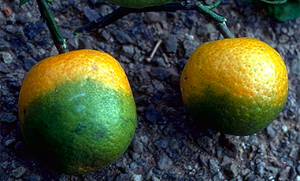
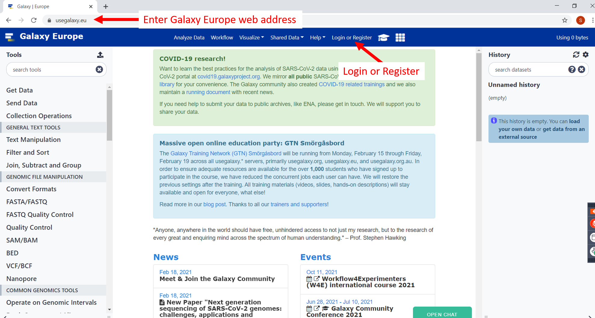
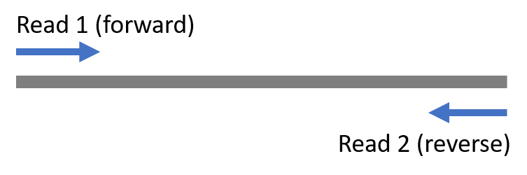

Sequence QC/Intro to Galaxy¶
Lecture¶
Introduction¶
In this practical you will learn to import and assess the quality of raw high throughput sequencing sequencing data in Galaxy.
The first dataset you will be working with is from an Illumina MiSeq dataset. The sequenced organism is the unculturable phloem-limited alphaproteobacterium “Candidatus Liberibacter asiaticus”, which causes Huanglongbing (HLB) disease on citrus. The sequenced bacterium was obtained directly from the root of an infected pummelo sample in California. The sequencing was done as paired-end 2x300bp.
Login to Galaxy¶
We will be using Galaxy for performing many of our bioinformatic analyses. This is a great free tool for performing bioinformatics, no coding necessary! There are lots of tutorials available online, both on how to use Galaxy and perform specific analysis. See training materials at link below on your own time.
https://training.galaxyproject.org/training-material/
Hands-On: Login
Open your favorite web browser (Chrome, Safari, or Firefox) and login to Galaxy Europe. If not already registered for Galaxy Europe, use this link to register and login:

Once logged in use the following link to access the training queue for this training. This link will only be available during the training, however your data and analysis results will still be available at usegalaxy.eu once training is over.
The Galaxy homepage is divided into three panels:
Tools on the left
Viewing panel in the middle
History of analysis and files on the right

Name History¶
Hands-On: Name History
Go to history panel (on the right)
Click on the history name (which by default is “Unnamed history”)
Type in a new name, “NPDN HTS 2021”
Press Enter on your keyboard to save it.
Upload Data¶
Hands-On: Upload Data
At the top of the Tools panel (on the left), click Upload
Click on ‘Collection’ Tab at the op
Click ‘Choose local files’ and navigate to where you placed the folder ‘raw_reads’ and select both files.
Click ‘start’ and ‘build’
Assign a new name to the collection, ‘hlb-root’
We only sequenced this genome once, why do we have two files?
We performed paired-end sequencing, one set of reads is the forward read and the other is the reverse.
Assess Dataset Quality¶
Hands-On: Assess Data Quality
At the top of the Tools panel (on the left), search for ‘fastqc’ and click on it.
Choose the collection you just created, ‘hlb-root’
..image:: _static/fastqc_upload.png
Scroll down and click ‘Execute’
FastQC provides various output statistics. Scroll through and examine them. At what point in the read do quality scores start declining?
Look at the GC content plot, there may be two peaks, why is this?
In metagenomic datasets, like this, you may get multiple GC peaks representing different GC content for the different taxa in the sample (i.e. one peak for host DNA and one for pathogen)
Improve Dataset Quality¶
Illumina sequencing technology requires to ligate adapters to both ends of genomic material to facilitate binding and sequencing on the flowcell. Adapter sequences should be removed because they can interfere with genome assembly. We will use Trimmomatic for adapter trimming and quality filtering.
Read more about Trimmomatic here: http://www.usadellab.org/cms/?page=trimmomatic
Hands-On: Improve Data Quality
At the top of the Tools panel (on the left), search for ‘trimmomatic’ and click on it.
Select ‘Paired-end’ (two separate input files) and then select the hlb reads you uploaded to the collection.
Under ‘Perform initial ILLUMINACLIP step’ choose ‘Yes’ and keep defaults.
Click ‘Execute’
If you have time, please run FastQC again to see how trimming improved the dataset quality. If not, run this analysis later on your own time.